Getting Started
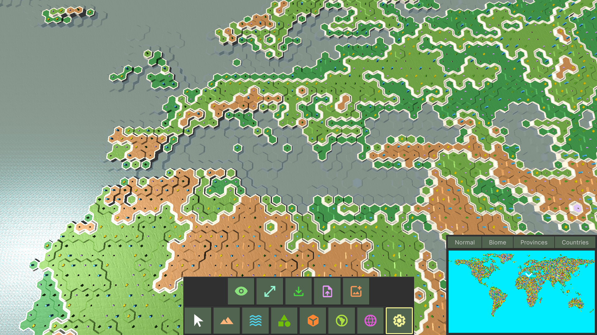
Samples Demo Scene
Install package from asset store.
Open Package Manager window (Window -> Package Manager)
Select the Fwt.HexTerrains package
In right section of the window find tabs "Description", "Version History", "Dependencies", "Samples". Select "Samples"
Import HexTerrains Demo core sample
Additionally import one of two following samples depending on your render pipeline: "HexTerrains Demo URP assets" or "HexTerrains Demo HDRP assets"
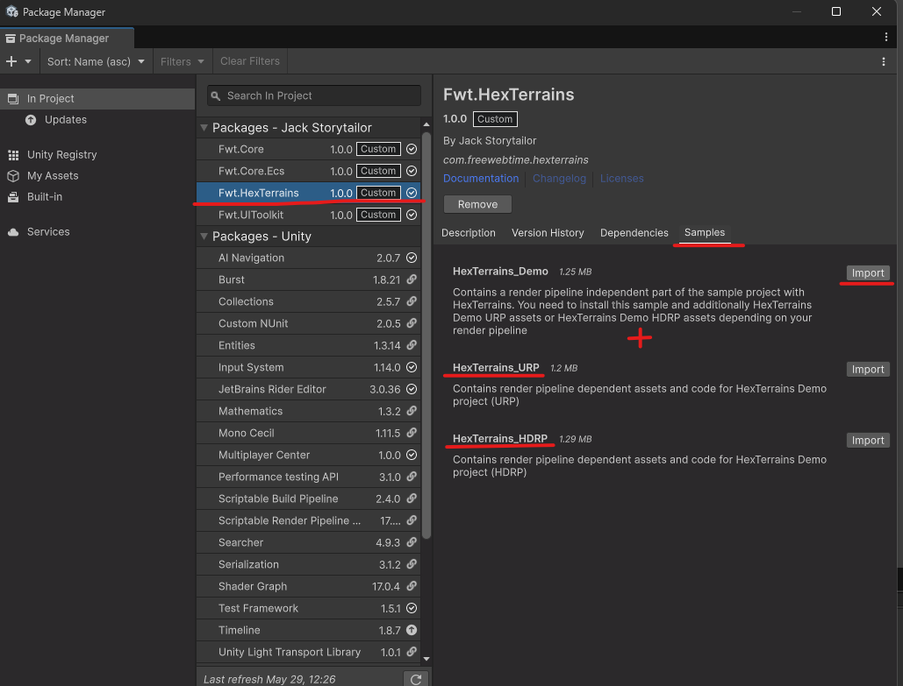
After sample projects are imported into your project, navigate to folder "Assets/Samples/HexTerrains/HexTerrains_URP" or "Assets/Samples/HexTerrains/HexTerrains_HDRP" depending on your render pipeline.
From there navigate to "Scenes" folder and open Showcase scene
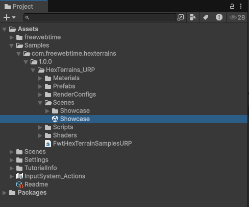
Press "Play" button
Select "System" User Tool category, then "Create New"
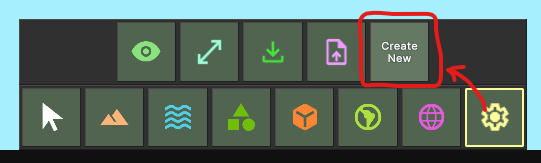
In openned window select a terrain prefab and put the settings you want.
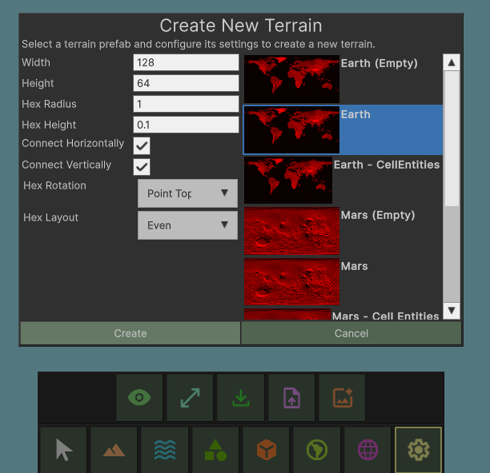
Press "Create" button
Enjoy!
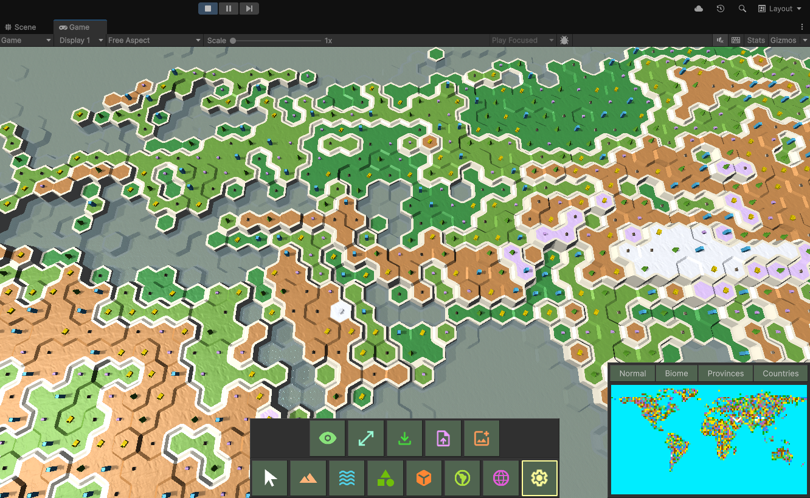
In-game terrain editor
In-game editor is a State Machine called (see class
UserToolStateMachine). State Machine has a set of User Tool States like Deform Terrain, Paint Biomes, Paint Cell Items, Paint Countries, etc. Every UserToolState communicates with a Terrain using a proxy implementation of theIHexTerrainAPI(seeHexTerrainAPIclass).All User Tools are split between a set of categories:
- Ground Tools (Deform, Level, Noise, Smooth, Heightmap, Paint Biome, Auto-paint Biome, Stamp Height, Stamp Biome)
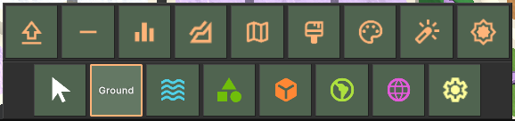
- Water Tools (Deform, Level, Noise, Smooth, Heightmap, Paint Biome, Auto-paint Biome, Stamp Height, Stamp Biome)
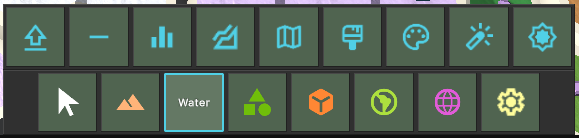
- Cell Items (Paint Cell Items, Stamp Cell Items)
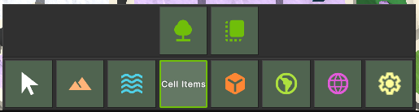
- Cell Entities (Paint Cell Entities, Stamp Cell Entities)
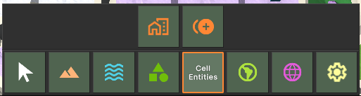
- Provinces (Paint Provinces, Stamp Provinces)
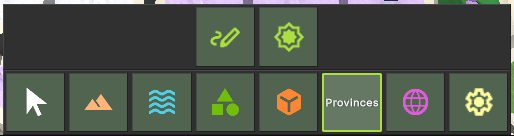
- Countries (Paint Countries, Stamp Countries)
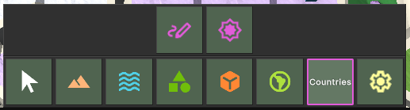
- System (Toggle Visibility, Resize Terrain, Save Terrain, Load Terrain, Create New)
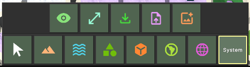
View modes
Hex Terrain supports rendering in a different view modes. View mode is a number, the value of the HexTerrainViewMode component on a Terrain Entity.
/// <summary>
/// Contains the current view mode of the terrain.
/// </summary>
public struct HexTerrainViewMode : IComponentData
{
/// <summary>
/// The current view mode of the terrain.
/// </summary>
public VersionValue<byte> Value;
}
To change a view mode, click on a respective button above the minimap. There are four built-in view modes already, but it's very simple to expand the list:
Normal View Mode (Regular terrain view)
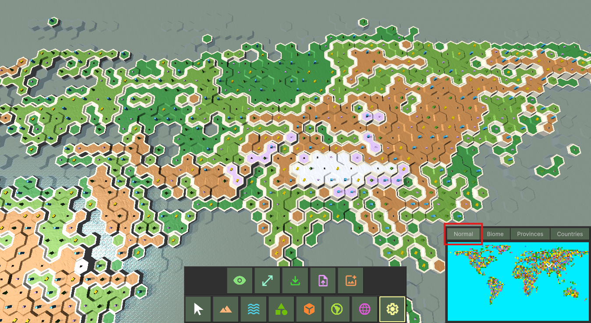
Biomes View Mode (Paints each cell to a color of it's biome, see
ColorPaletteonHexSurfaceLayerAuthoringmono behaviour)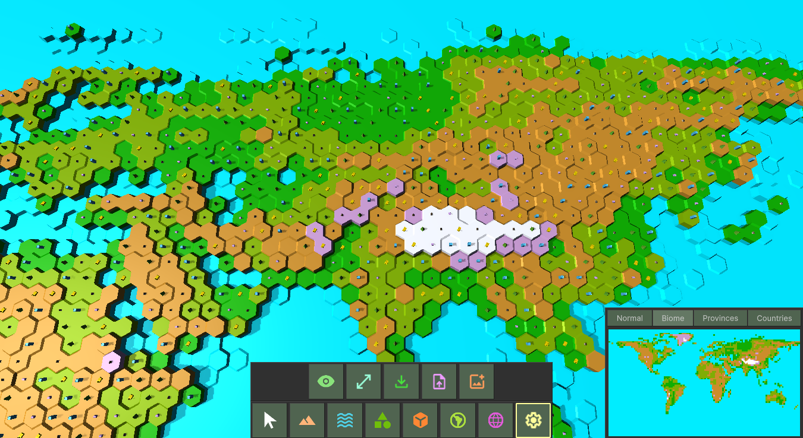
Provinces View Mode
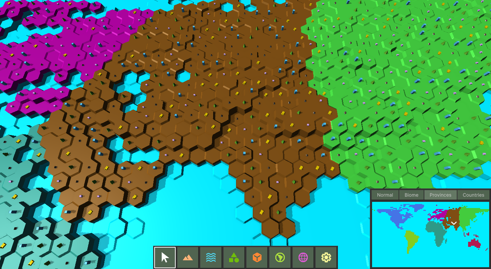
Countries View Mode
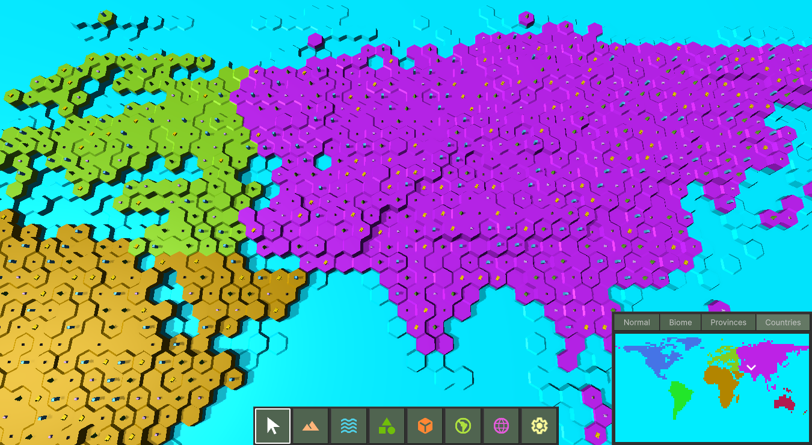
To setup a ViewMode, take a look at the MinimapScreen prefab, the SamplesMinimapScreen component, the ViewModes list. Here you can setup which color textures are painted on the Minimap when terrain is in the respective ViewMode.
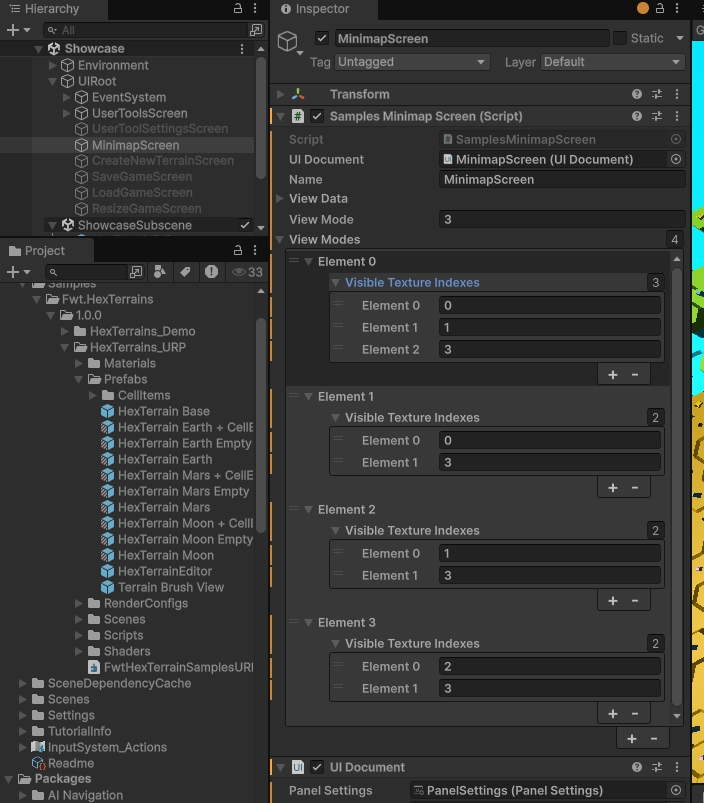
Color texture is a read/write enabled Texture2D that is filled with calculated colors from terrain. For instance, each biome has it's own color for minimap (see ColorPalette list on SurfaceLayer authoring component)
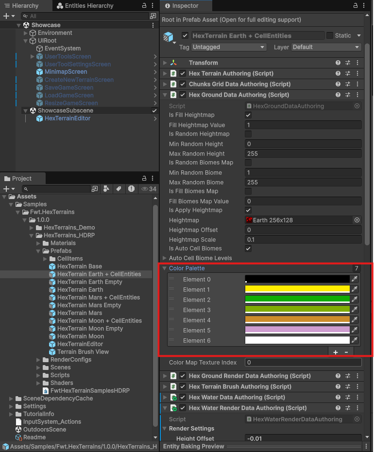
or, for example, the Color setup for each Cell Entity:
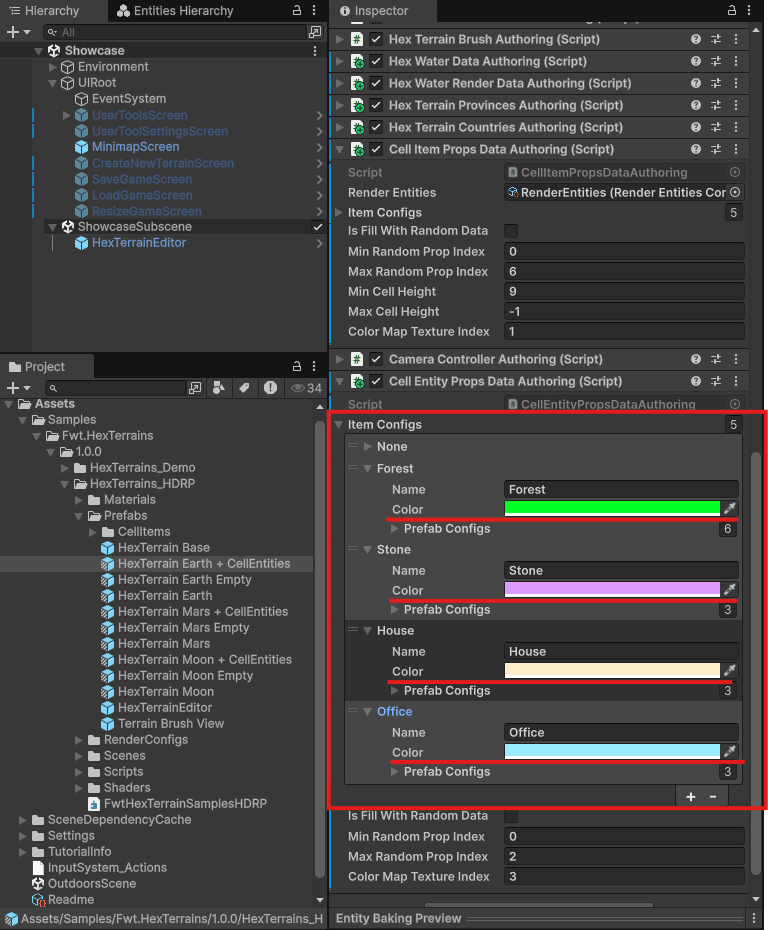
Now, take a look at the field ColorMapTextureIndex of each renderable terrain layer (Surface, ByteArea, CellItems, CellEntities). This value tells on which texture to copy colors from the layer's color palette.
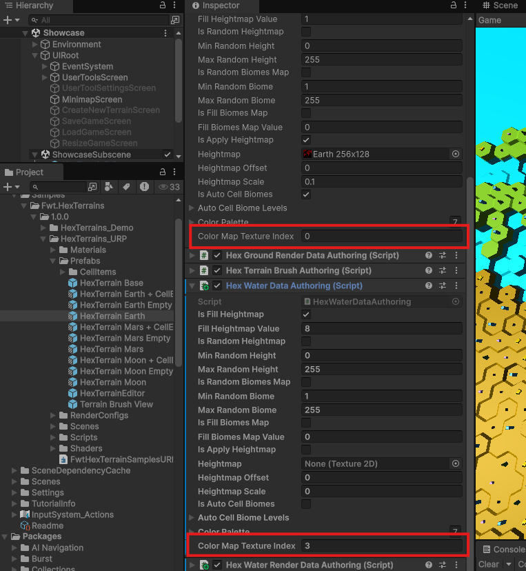
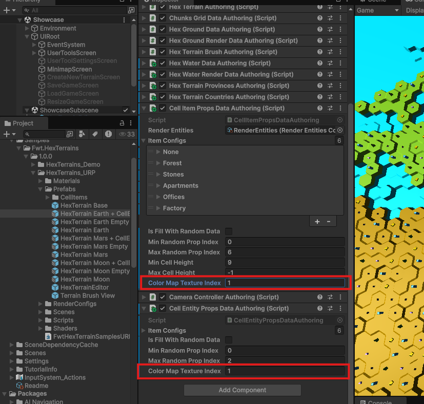
All textures are stored into the ColorMapTexturesSource scriptable object:
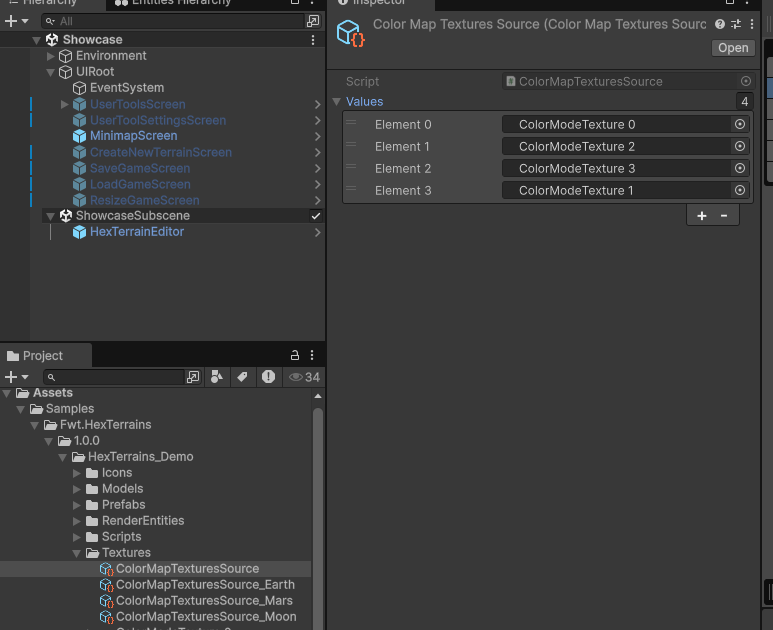
.Then setup the UI, so it has room for all the ColorMap textures you have (currently it displays 4 textures)
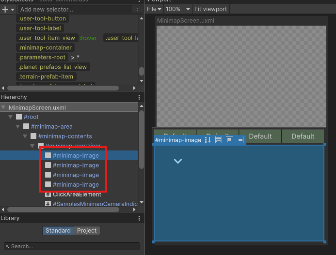
Create terrain on scene load
If you want to have a terrain loaded at scene load, just put on the subscene a terrain prefab. If you have a HexTerrainEditor prefab on the scene, set a reference to the terrain prefab in the SamplesUserToolDataAuthoring script in the field Terrain Authoring:
You can find Terrain prefabs in the Samples folder by path "Assets/Samples/Fwt.HexTerrains/1.0.0/HexTerrains_URP/Prefabs" for URP projects and by path "Assets/Samples/Fwt.HexTerrains/1.0.0/HexTerrains_HDRP/Prefabs" for HDRP projects
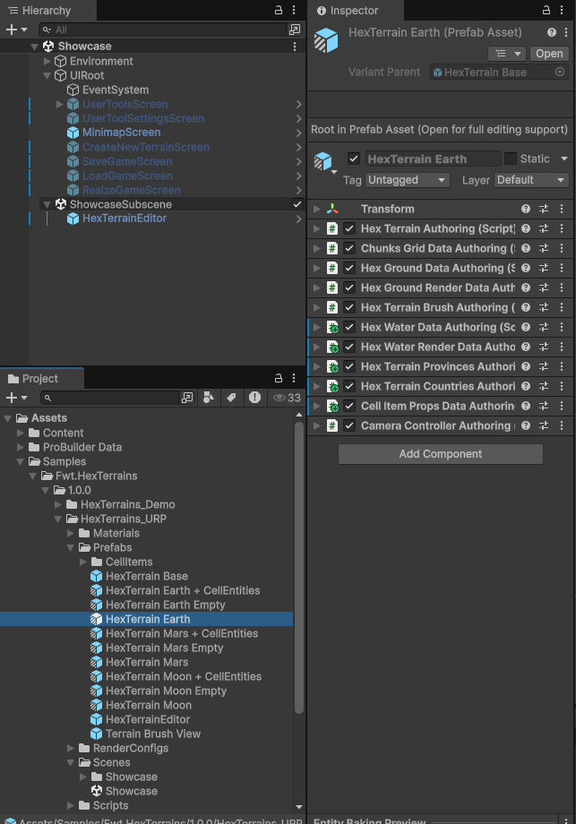
Put a prefab you want on the "Showcase Subscene" subscene besides the HexTerrainEditor prefab. Then add the reference to this Terrain on the HexTerrainEditor game object at "Terrain Authoring" field of SamplesUserToolDataAuthoring component
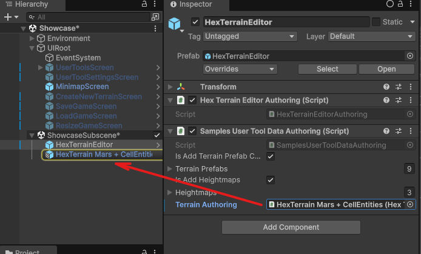
Note: if you don't set a reference to the terrain on the HexTerrainEditor, you will not be able to edit a terrain using the User Tools Panel at the bottom center of the screen.
Note: HexTerrainEditor prefab is optional. It is needed for having the User Tools Panel to be created. For your gameplay it might not be needed, so feel free to get rid of it.
How to interact with a Terrain
- To see how it's done, take a look at interface
IHexTerrainAPIand it's example implementationHexTerrainAPIclass:
/// <summary>
/// Example implementation of the IHexTerrainAPI interface.
/// Used to be injected into places outside the ECS World.
/// Contains examples of how to read and write data from the TerrainEntity.
/// Abstracts user code from the TerrainData storage (usually the Entity World).
/// Provides an API for working with a terrain.
/// Usually uses in a UserTools (brushes, etc.).
/// </summary>
public interface IHexTerrainAPI
{
/// <summary>
/// Get the TerainEntity this API is working with.
/// </summary>
/// <returns>terrain terrainEntity this API works with</returns>
Entity GetTerrainEntity();
/// <summary>
/// Returns a Terrain Settings if found.
/// </summary>
/// <returns>terrain settings if found or null if not found</returns>
HexTerrainSettings? GetTerrainSettings();
/// <summary>
/// returns a data layer from the TerrainEntity <see cref="GetTerrainEntity()"/>
/// </summary>
/// <typeparam name="TDataLayer"></typeparam>
/// <returns>data layer if found, otherwise - null</returns>
TDataLayer GetDataLayer<TDataLayer>() where TDataLayer : class;
/// <summary>
/// Checks if the data layer is supported by the terrain.
/// Usually means if terrain has this data layer.
/// </summary>
/// <typeparam name="TDataLayer">type of the TerrainLayer to check</typeparam>
/// <returns>true if supports, otherwise - false</returns>
bool IsLayerSupported<TDataLayer>() where TDataLayer : class;
/// <summary>
/// Returns the height map value (byte) of the cell at the specified index.
/// </summary>
/// <typeparam name="TSurfaceData">type of surface data to get height from</typeparam>
/// <param name="cellIndex">cell index to get a height from</param>
/// <returns>heightmap value if found or null if not found</returns>
byte? GetCellHeight<TSurfaceData>(int cellIndex) where TSurfaceData : HexSurfaceLayer;
/// <summary>
/// Sets the height map value (byte) of the cell at the specified index.
/// </summary>
/// <typeparam name="TSurfaceData">type of surface data to set height for</typeparam>
/// <param name="cellIndex">cell index to set a height for</param>
/// <param name="height"></param>
/// <returns>true if value has been set, otherwise - false</returns>
bool SetCellHeight<TSurfaceData>(int cellIndex, byte height) where TSurfaceData : HexSurfaceLayer;
/// <summary>
/// Returns the biomes map value (byte) of the cell at the specified index.
/// </summary>
/// <typeparam name="TSurfaceData">type of surface data to get biome from</typeparam>
/// <param name="cellIndex">cell index to get a biome from</param>
/// <returns>biome value if found or null if not found</returns>
byte? GetCellBiome<TSurfaceData>(int cellIndex) where TSurfaceData : HexSurfaceLayer;
/// <summary>
/// Sets the biomes map value (byte) of the cell at the specified index.
/// </summary>
/// <typeparam name="TSurfaceData">type of surface data to set biome for</typeparam>
/// <param name="cellIndex">cell index to set a biome for</param>
/// <param name="biome">biome value to set</param>
/// <returns>true if value has been set, otherwise - false</returns>
bool SetCellBiome<TSurfaceData>(int cellIndex, byte biome) where TSurfaceData : HexSurfaceLayer;
/// <summary>
/// Returns the CellItem from terrain cell at the specified index.
/// </summary>
/// <typeparam name="TItemsLayer">type of cell items layer to get data from</typeparam>
/// <param name="cellIndex">cell index to get a CellItem from</param>
/// <returns>CellItem value if found, otherwise null</returns>
CellItem? GetCellItem<TItemsLayer>(int cellIndex) where TItemsLayer : CellItemsLayer;
/// <summary>
/// Sets the CellItem from terrain cell at the specified index.
/// </summary>
/// <typeparam name="TItemsLayer">type of cell items layer to set value on</typeparam>
/// <param name="cellIndex">cell index to set CellItem on</param>
/// <param name="item">CellItem value to set on provided cellIndex on provided ItemsData layer</param>
/// <returns>true if value has been set, otherwise - false</returns>
bool SetCellItem<TItemsLayer>(int cellIndex, CellItem item) where TItemsLayer : CellItemsLayer;
/// <summary>
/// Returns the CellEntity from terrain cell at the specified index.
/// </summary>
/// <typeparam name="TEntitiesData">type of cell terrainEntity layer to get data from</typeparam>
/// <param name="cellIndex">cell index to get a CellEntity from</param>
/// <returns>CellEntity value if found, otherwise null</returns>
CellEntity? GetCellEntity<TCellEntityLayer>(int cellIndex) where TCellEntityLayer : CellEntitiesLayer;
/// <summary>
/// Sets the CellEntity from terrain cell at the specified index.
/// </summary>
/// <typeparam name="TEntitiesData">type of cell terrainEntity layer to set value on</typeparam>
/// <param name="cellIndex">cell index to set CellEntity on</param>
/// <param name="item">CellItem value to set on provided cellIndex on provided EntitiesData layer</param>
/// <returns>true if value has been set, otherwise - false</returns>
bool SetCellEntity<TCellEntityLayer>(int cellIndex, CellEntity entity) where TCellEntityLayer : CellEntitiesLayer;
/// <summary>
/// Returns the CellArea from terrain cell at the specified index.
/// </summary>
/// <typeparam name="TAreasLayer">type of areas data layer to get value from</typeparam>
/// <param name="cellIndex">cell index to get value from</param>
/// <returns>CellArea if found or null if not found</returns>
byte? GetCellArea<TAreasLayer>(int cellIndex) where TAreasLayer : HexByteAreasLayer;
/// <summary>
/// Sets the CellArea from terrain cell at the specified index.
/// </summary>
/// <typeparam name="TAreasLayer">type of areas data layer to set value on</typeparam>
/// <param name="cellIndex">cell index to set value on</param>
/// <param name="area">area value to set</param>
/// <returns>true if value has been set, otherwise - false</returns>
bool SetCellArea<TAreasLayer>(int cellIndex, byte area) where TAreasLayer : HexByteAreasLayer;
/// <summary>
/// Returns the Raycast data from the TerrainEntity <see cref="HexTerrainRaycastData"/>.
/// this data contains information about the raycast from mouse to terrain result.
/// </summary>
/// <returns>raycast data from the TerrainEntity</returns>
HexTerrainRaycastData? GetRaycastData();
/// <summary>
/// Returns the cell index under the cursor.
/// </summary>
/// <returns>cell index if found and raycast hit the terrain, otherwise - false</returns>
int? GetCellIndexUnderCursor();
/// <summary>
/// Returns the cell coordinate under the cursor.
/// </summary>
/// <returns>cell coordinate if found and raycast hit the terrain, otherwise - false</returns>
int2? GetCellCoordUnderCursor();
/// <summary>
/// Returns a list of available HexTerrainPrefabConfigs from the UserToolEntity (if any)
/// </summary>
/// <typeparam name="THexTerrainPrefabConfig">type of HexTerrainPrefabConfig you have</typeparam>
/// <returns></returns>
DynamicBuffer<THexTerrainPrefabConfig> GetHexTerrainPrefabConfigsBuffer<THexTerrainPrefabConfig>()
where THexTerrainPrefabConfig : unmanaged, IBufferElementData, IHexTerrainPrefabConfig;
/// <summary>
/// Returns a list of available HexTerrainPrefabConfigs from the UserToolEntity (if any).
/// This list can be sent to the UI to display available terrain prefabs for the user to select from.
/// </summary>
/// <returns>collection of hex terrain prefab configs for user to select from</returns>
IList<IHexTerrainPrefabConfig> GetHexTerrainPrefabConfigsList();
/// <summary>
/// Returns the brush view from the TerrainEntity <see cref="HexTerrainBrushView"/>.
/// </summary>
/// <returns>brush view from the TerrainEntity if found, otherwise - null</returns>
HexTerrainBrushView GetBrushView();
/// <summary>
/// Returns the brush size from the TerrainEntity <see cref="HexTerrainBrush"/>.
/// </summary>
/// <returns>brush size if found, otherwise - null</returns>
int? GetBrushSize();
/// <summary>
/// Sets the brush size on the TerrainEntity <see cref="HexTerrainBrush"/>.
/// </summary>
/// <param name="brushSize">new brush size</param>
/// <returns>true if value has been set, otherwise - false</returns>
bool SetBrushSize(int brushSize);
/// <summary>
/// Returns true if the brush on TerrainEntity is resizable.
/// </summary>
/// <returns>is brush found and resizable</returns>
bool GetIsResizableBrush();
/// <summary>
/// Sets the IsResizable value of the brush on TerrainEntity <see cref="HexTerrainBrush"/>.
/// </summary>
/// <param name="isResizableBrush">new value for IsResizable</param>
/// <returns>true if value has been set, otherwise - false</returns>
bool SetIsResizableBrush(bool isResizableBrush);
/// <summary>
/// Returns the brush opacity from the TerrainEntity <see cref="HexTerrainBrush"/>.
/// </summary>
/// <returns>brush opacity if brush is found, otherwise - null</returns>
float? GetBrushOpacity();
/// <summary>
/// Sets the brush opacity on the TerrainEntity <see cref="HexTerrainBrush"/>.
/// </summary>
/// <param name="opacity">new opacity value (0..1)</param>
/// <returns>true if value has been set, otherwise - false</returns>
bool SetBrushOpacity(float opacity);
/// <summary>
/// Returns true if the brush on TerrainEntity is visible.
/// </summary>
/// <returns>true if brush is found and is visible, otherwise - false</returns>
bool GetIsVisibleBrush();
/// <summary>
/// Sets the IsVisible value of the brush on TerrainEntity <see cref="HexTerrainBrush"/>.
/// </summary>
/// <param name="isVisibleBrush">new IsVisible value</param>
/// <returns>true if value has been set, otherwise - false</returns>
bool SetIsVisibleBrush(bool isVisibleBrush);
/// <summary>
/// Returns the brush color from the TerrainEntity <see cref="HexTerrainBrush"/>.
/// </summary>
/// <returns>brush color if found, otherwise - false</returns>
Color32? GetBrushColor();
/// <summary>
/// Sets the brush color on the TerrainEntity <see cref="HexTerrainBrush"/>.
/// </summary>
/// <param name="color">new brush color</param>
/// <returns>true if value has been set, otherwise - false</returns>
bool SetBrushColor(Color32 color);
/// <summary>
/// Returns the view mode of the TerrainEntity <see cref="HexTerrainViewMode"/>.
/// </summary>
/// <returns>view mode if found, otherwise - false</returns>
byte GetViewMode();
/// <summary>
/// Returns true if terrain is visible, false is invisible, null if no terrain with visibility found<see cref="HexTerrainVisibility"/>.
/// </summary>
/// <returns>true if terrain is visible, false is invisible, null if no terrain with visibility found</returns>
bool? GetIsTerrainVisible();
/// <summary>
/// Sets terrain visibility. <see cref="HexTerrainVisibility"/>
/// Returns true if value was set
/// </summary>
/// <param name="isVisible">New visibility value for terrain</param>
/// <returns>True if value was set, otherwise - false</returns>
bool SetIsTerrainVisible(bool isVisible);
/// <summary>
/// Toggles the visibility of the terrain on the TerrainEntity <see cref="HexTerrainVisibility"/>.
/// </summary>
/// <returns>True if terrain now visible, false is invisible, null if no terrain with visibility found</returns>
bool? ToggleIsTerrainVisible();
/// <summary>
/// Sets the view mode on the TerrainEntity <see cref="HexTerrainViewMode"/>.
/// </summary>
/// <param name="viewMode">new view mode</param>
/// <returns>true if value has been set, otherwise - false</returns>
bool SetViewMode(byte viewMode);
/// <summary>
/// Saves the TerrainEntity to a file.
/// </summary>
/// <param name="filePath">file path to save a terrain into</param>
/// <returns>true if terrain has been saved, otherwise - false</returns>
bool SaveTerrain(string filePath);
/// <summary>
/// Loads the TerrainEntity from a file.
/// </summary>
/// <param name="filePath">file path to load a terrain from</param>
/// <returns>true if loaded, otherwise - false</returns>
bool LoadTerrain(string filePath);
/// <summary>
/// Resizes the TerrainEntity <see cref="HexTerrainSettings.TerrainSize"/>.
/// </summary>
/// <param name="terrainSize">new terrain size</param>
/// <returns>true if was resized, otherwise - false</returns>
bool ResizeTerrain(int2 terrainSize);
/// <summary>
/// Destroys a terrain entity provided.
/// </summary>
/// <param name="terrainEntity">terrain entity to destroy</param>
/// <returns>true if was destroyed, otherwise - false</returns>
bool DestroyTerrain(Entity terrainEntity);
/// <summary>
/// Creates a new terrain terrainEntity by instantiating provided prefab.
/// </summary>
/// <param name="terrainPrefab">prefab of the terrainEntity to create</param>
/// <returns>instance of the created terrainEntity</returns>
Entity CreateNewTerrainEntity(Entity terrainPrefab);
/// <summary>
/// Creates a new terrain entity with the specified settings.
/// Destroys existing terrain
/// </summary>
/// <param name="terrainPrefabConfig">prefab config of the terrainEntity to create</param>
/// <param name="terrainSettings">terrain settings to overwrite</param>
/// <returns>instance of the created terrainEntity</returns>
Entity CreateNewTerrain<TPrefabConfig>(TPrefabConfig terrainPrefabConfig, HexTerrainSettings terrainSettings) where TPrefabConfig : IHexTerrainPrefabConfig;
/// <summary>
/// Creates a new screen of the specified type.
/// </summary>
/// <typeparam name="TScreen">type of the screen to create</typeparam>
/// <returns>screen instance</returns>
TScreen CreateUIScreen<TScreen>() where TScreen : UIScreen;
/// <summary>
/// Gets an existing screen of the specified type, or creates a new one if it doesn't exist.
/// </summary>
/// <typeparam name="TScreen">type of the screen to get or create</typeparam>
/// <returns>screen instance</returns>
TScreen GetOrCreateUIScreen<TScreen>() where TScreen : UIScreen;
/// <summary>
/// Gets an existing screen of the specified type if found.
/// </summary>
/// <typeparam name="TScreen">type of the screen to get</typeparam>
/// <returns></returns>
TScreen GetUIScreen<TScreen>() where TScreen : UIScreen;
/// <summary>
/// Destroys the specified screen.
/// </summary>
/// <typeparam name="TScreen">type of a screen to destroy</typeparam>
/// <returns>true if the screen was destroyed successfully; otherwise, false</returns>
bool DestroyUIScreen<TScreen>() where TScreen : UIScreen;
/// <summary>
/// Destroys the specified screen instance.
/// </summary>
/// <param name="screen">screen instance to destroy</param>
/// <returns>true if the screen was destroyed successfully; otherwise, false</returns>
bool DestroyUIScreen(UIScreen screen);
}
- In general all the interactions are done by accessing components on the Terrain Entity:
/// <summary>
/// returns a data layer from the TerrainEntity <see cref="TerrainEntity"/>
/// </summary>
/// <typeparam name="TDataLayer"></typeparam>
/// <returns></returns>
public virtual TDataLayer GetDataLayer<TDataLayer>() where TDataLayer : class
{
if (!EntityManager.Exists(TerrainEntity) || !EntityManager.TryGetComponentObject<TDataLayer>(TerrainEntity, out var dataLayer))
{
return default;
}
return dataLayer;
}
/// <summary>
/// Returns the height map value (byte) of the cell at the specified index.
/// </summary>
/// <typeparam name="TSurfaceData">type of surface data to get height from</typeparam>
/// <param name="cellIndex">cell index to get a height from</param>
/// <returns>heightmap value if found or null if not found</returns>
public virtual byte? GetCellHeight<TSurfaceData>(int cellIndex) where TSurfaceData : HexSurfaceLayer
{
var surfaceData = GetDataLayer<TSurfaceData>();
if (surfaceData == null)
{
return null;
}
return surfaceData.GetCellHeight(cellIndex);
}
/// <summary>
/// Sets the height map value (byte) of the cell at the specified index.
/// </summary>
/// <typeparam name="TSurfaceData">type of surface data to set height for</typeparam>
/// <param name="cellIndex">cell index to set a height for</param>
/// <param name="height"></param>
/// <returns>true if value has been set, otherwise - false</returns>
public virtual bool SetCellHeight<TSurfaceData>(int cellIndex, byte height) where TSurfaceData : HexSurfaceLayer
{
var surfaceData = GetDataLayer<TSurfaceData>();
if (surfaceData == null)
{
return false;
}
return surfaceData.SetCellHeight(cellIndex, height);
}
- Terrain Entity contains a set of Terrain Layers (see Terrain Layers)
Surface Layers (Ground, Water, add your own) Contains Heightmap and Biomesmap.
public abstract partial class HexSurfaceLayer : IDisposable { ... /// <summary> /// HeightMap data layer. Contains a byte height value per cell <see cref="HeightMapDataLayer"/> /// </summary> public HeightMapDataLayer HeightMap { get; protected set; } /// <summary> /// BiomesMap data layer. Contains biome index per cell <see cref="CellBiomesDataLayer"/> /// </summary> public CellBiomesDataLayer BiomesMap { get; protected set; } ... }Surface Render Layer (
HexSurfaceRenderLayer<TSurfaceLayer>) Contains generated meshes for the respective Surface Layer.public abstract partial class HexSurfaceRenderLayer : IDisposable { ... /// <summary> /// Data layer that stores meshes for the hex terrain chunks. /// </summary> public ChunkMeshesDataLayer ChunkMeshes; ... }ByteArea Layers (Countries, Provinces, add your own) Contains a byte map (byte per terrain cell).
public abstract partial class ByteAreasLayer : IDisposable { ... /// <summary> /// Area index per cell /// </summary> public CellByteAreaDataLayer CellAreaMap { get; set; } ... }Cell Items Layers (Cell Items, add your own) Contains a CellItems map (Cell Item per terrain cell). Cell Item is a static visual object that is painted on the cell (up to 8 submeshes per CellItem).
public abstract class CellItemsLayer : IDisposable { ... /// <summary> /// Data layer for storing a CellItem per cell /// </summary> public CellItemDataLayer CellItems; ... }Cell Entities Layers (Cell Entities, add your own) Contains a CellEntities map (Cell Entity per terrain cell) Cell Entity is a full-fledged Entity with any components on it.
public abstract class CellEntitiesLayer : IDisposable { ... /// <summary> /// Data layer for storing a CellEntity per cell /// </summary> public HexCellEntityDataLayer CellEntities; ... }
- As you can see, every Terrain Layer contains one or more Data Layers. Data Layer is a container for (usually) collection of data like byte, CellItem, Color32, etc. See more about DataLayers. The main point of the DataLayer is that it allows to track Read and Write job handlers, so you can schedule jobs to access or modify a DataLayer's data safely.